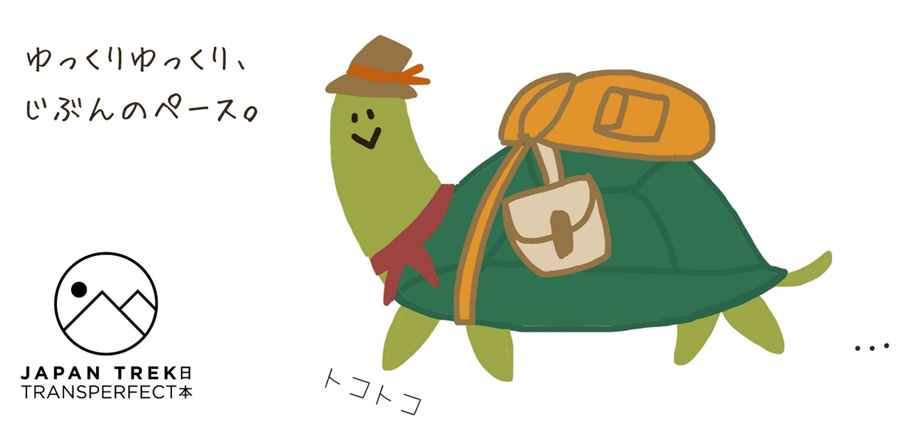
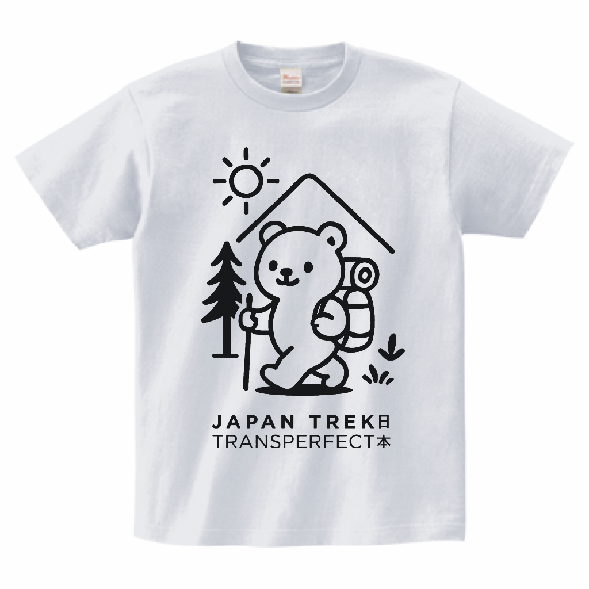
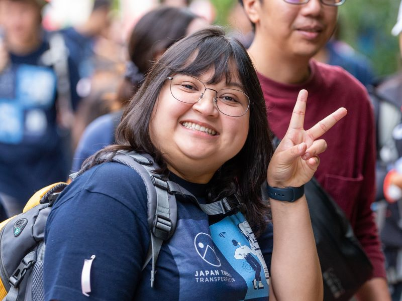
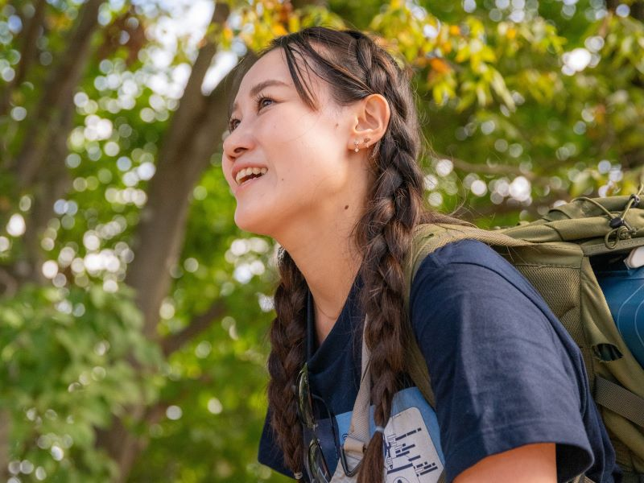
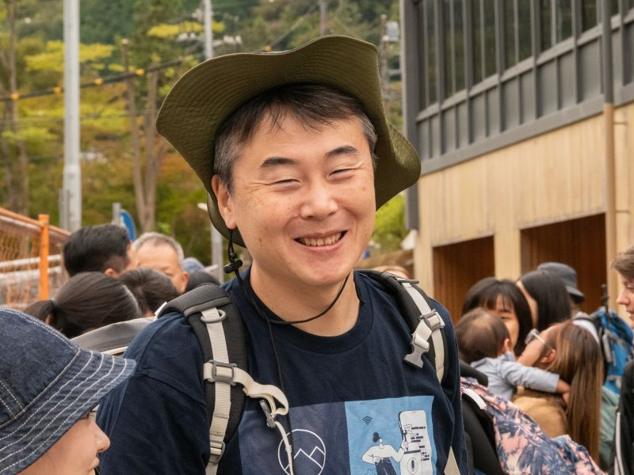
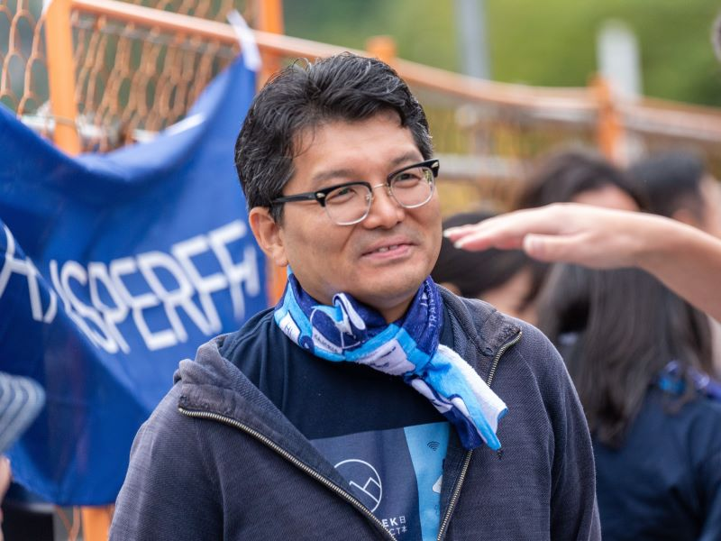

Since 1985, P.U.S. JAPAN has been supporting children who are unable to attend school in Bangladesh, Nepal, and Myanmar. They have already built 40 schools.P.U.S. JAPANは1985年以来、バングラデシュ、ネパール、ミャンマーで学校に通えない子供たちを支援しており、すでに40校の学校を建設しています。
Small Steps. Big Impact. Every step helps a child learn. Every ¥2,000 helps one child attend school for one month. Based on past donation amounts, we could potentially help send dozens of children to school, and building a new school together may not be out of reach!小さな一歩が、大きな力に。皆様の一歩が子供の学びを助けます。2,000円で1人の子供が1ヶ月学校に通えます。過去の寄付実績から、何十人もの子供たちを学校へ送り出すことができ、さらには新しい学校を共に建設することも夢ではありません！
Read about P.U.S. JAPANP.U.S. JAPANについてSaturday, November 7th11月7日 土曜日
A scenic climb linking Mount Tenran and Mount Tonosu. The path offers switchback forest tracks, natural viewpoints over Hanno, and an accessible ascent suitable for beginners and experienced walkers alike.天覧山と多峯主山を結ぶ絶景のコース。つづら折りの林道、飯能を見渡す自然の展望台があり、初心者から経験者まで楽しめる登りやすいルートです。
Note: Surfaces can be slippery after rain. Wear grip shoes and bring water. Transport costs are self-covered.注記: 雨上がりは路面が滑りやすくなります。グリップ力のある靴を履き、水を持参してください。交通費は自己負担となります。
Preparation and gear for the ascent. 登山の準備と装備。
Proper gear and hydration for the ascent.登山のための適切な装備と水分補給。
100% of proceeds go directly to P.U.S. JAPAN to support children's education.収益の100%は、子供たちの教育支援のためP.U.S. JAPANへ直接寄付されます。

Grab the official Trek T-Shirt. All profit goes to our charity partners.公式トレックTシャツを手に入れましょう。利益はすべてチャリティーパートナーへ寄付されます。



